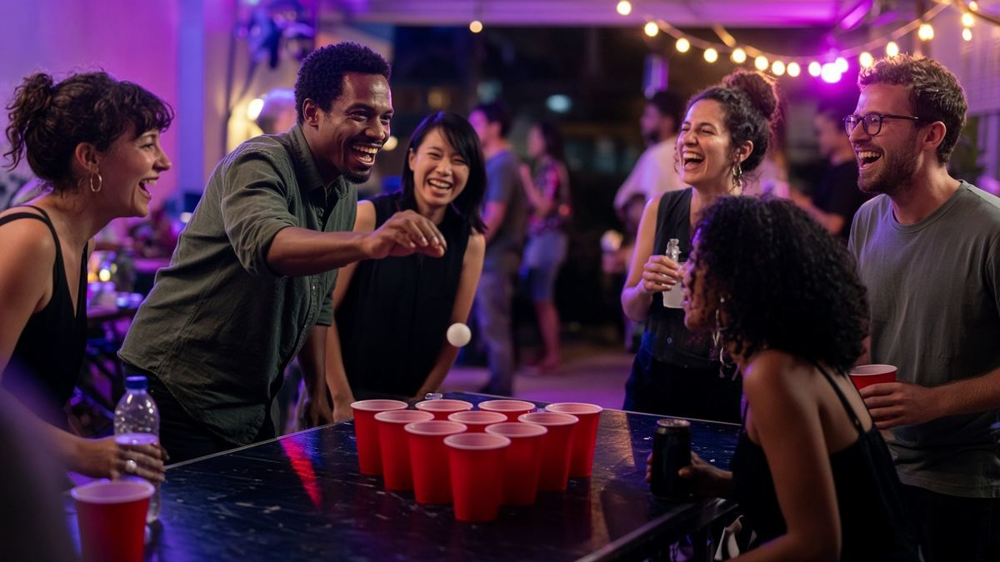

Games for adults
Free drinking games for your next night in
Party games for adults — host on your phone, friends join with a code.

Games for adults
Party games for adults — host on your phone, friends join with a code.

2–8 players
No physical deck
Guess red or black. A wrong guess is one optional sip per round, max.
Non-alcoholic: Pass skips the colour guess. It is not a drink button.
Host2–12 players
Each phone joins with a code. One small sip or a 3-second pose. Nothing stacks.
Non-alcoholic: A yes is one small optional sip, water, or a 3-second pose. Nothing stacks.
Host3–10 players
Build a ridiculous story one sentence at a time.
Non-alcoholic: A 5-second dramatic pose can stand in for a sip. You may decline both.
HostSips are optional. Nothing stacks. Passing is fine.
It's free, there's nothing to download, it runs on your phone, and every game works with non-alcoholic drinks.
One person starts a room and gets a short code.
Everyone else opens TipsyPlay on their own phone and enters the code.
Each phone shows the prompt. Sip if you want, or take the non-alcoholic alternative.
TipsyPlay is a free set of drinking games and party games for adults. You play in the browser on the phones you already have.
No. There is no app download. Open TipsyPlay, host a room, and friends join with a code.
Yes. Every game works with non-alcoholic drinks. Passing is always fine, and nobody has to sip.
You must be of legal drinking age in your location.
Know your limits. Sips are optional and small. There is no chugging, no races, and no pressure to finish a drink.
Every game works with non-alcoholic drinks. Points, dares, and finger-folds are always a full way to play.
Never drink and drive. Plan a ride home before you start.